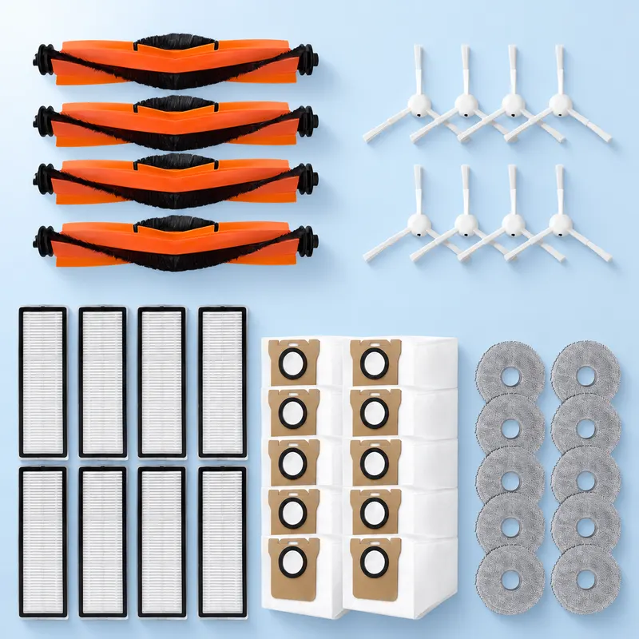

샤오미
메인브러시 축·크라프트 더스트백 미리 챙기는 샤오미 미지아 M30 PRO 1년 소모품 패키지
메인브러시 축·크라프트 더스트백 미리 챙기는 샤오미 미지아 M30 PRO 1년 소모품 패키지 핵심 규격·교체 기준 요약. 스테이션에서 머리카락 커팅과 자동 먼지 비움을 도와주는 샤오미 미지아 M30 PRO라도 본체 하단 메인브러시 양끝 베어링 축과 더스트백 채워짐 상...

메인브러시 축·크라프트 더스트백 미리 챙기는 샤오미 미지아 M30 PRO 1년 소모품 패키지 핵심 규격·교체 기준 요약. 스테이션에서 머리카락 커팅과 자동 먼지 비움을 도와주는 샤오미 미지아 M30 PRO라도 본체 하단 메인브러시 양끝 베어링 축과 더스트백 채워짐 상...

모서리 확장 물걸레 패드 교대하는 샤오미 미지아 M30S 1년 소모품 패키지 관리 핵심 규격·교체 기준 요약. 걸레 암이 바깥으로 뻗어 걸레받이와 가구 모서리를 닦아내는 샤오미 미지아 M30S는 원형 물걸레 패드 가장자리 파일이 일반 기종보다
긴 머리카락 많은 집의 샤오미 미지아 M30 PRO 브러시·더스트백 1년 세트 관리 핵심 규격·교체 기준 요약. 스테이션에서 머리카락 커팅과 자동 먼지 비움을 도와주는 샤오미 미지아 M30 PRO라도 본체 하단 메인브러시 양끝 베어링 축과 더스트백 채워짐 상태를 주기...
벽면 밀착 스윙 물걸레 쓰는 샤오미 미지아 M30S 패드 마모·브러시 점검법 핵심 규격·교체 기준 요약. 걸레 암이 바깥으로 뻗어 걸레받이와 가구 모서리를 닦아내는 샤오미 미지아 M30S는 원형 물걸레 패드 가장자리 파일이 일반 기종보다

복도 콘솔장 수납으로 깔끔한 샤오미 로봇청소기 M40 브러시·걸레 1년 세트 핵심 규격·교체 기준 요약. 거실이나 복도에 스테이션을 두고 쓰는 샤오미 로봇청소기 M40은 자주 교체하는 오렌지 V자 브러시와 원형 걸레 패드, 화이트 프레임 필터, 크라프트 칼라 더스트백...

샤오미 로봇청소기 X10+ 1년 세트 구성과 물걸레·더스트백·필터 교대 관리법 핵심 규격·교체 기준 요약. 자동 먼지 비움과 물걸레 세척을 꾸준히 수행해 온 샤오미 로봇청소기 X10+는 브러시와 원형 걸레 패드, 필터, 더스트백을 새것으로 교체해 주면 흡입력과 물걸레...
샤오미 미지아 M30 PRO 1년 세트 구성과 브러시·물걸레·더스트백 관리법 핵심 규격·교체 기준 요약. 스테이션 자동 관리 기능이 강화된 샤오미 미지아 M30 PRO는 브러시와 원형 걸레 패드, 더스트백 여분을 미리 구비해 두면 청소 흐름이 끊기지 않습니다.
샤오미 미지아 M30S 1년 세트 구성과 브러시·물걸레·더스트백 관리법 핵심 규격·교체 기준 요약. 모서리까지 뻗어 닦는 확장형 물걸레 암을 탑재한 샤오미 미지아 M30S는 원형 물걸레 패드와 사이드브러시 마모 상태를 주기적으로 살펴보면 구석 청소 품질이 일정하게 유...
샤오미 로봇청소기 M40 1년 세트 구성과 브러시·물걸레·더스트백 관리법 핵심 규격·교체 기준 요약. 강력한 흡입력과 물걸레 세척 스테이션을 갖춘 샤오미 로봇청소기 M40은 브러시와 원형 걸레 패드, 더스트백을 주기적으로 교체해 주면 첫날 같은 청소 컨디션을 이어갈...